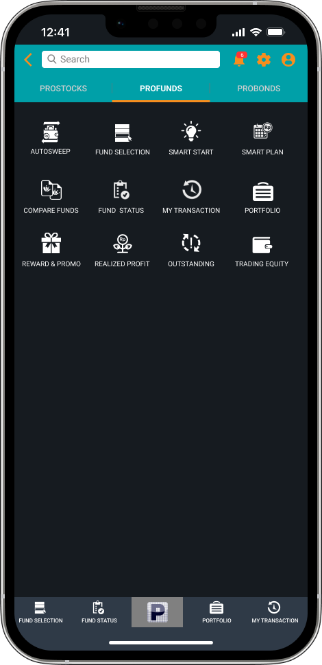
Step 1 · Entry
Put Autosweep up front
Autosweep moves out of Settings and becomes the first item in the Profund menu.
Discoverability
Redesigning Autosweep, the POEMS feature that puts idle cash to work, so people can find it, understand it and turn it on with confidence.
Money left idle in an RDI (investment account) earns little. Autosweep subscribes it automatically to a money market fund, which pays a higher return than the RDI.
When a user doesn't have enough equity for a stock purchase, the fund is redeemed automatically to settle the transaction.
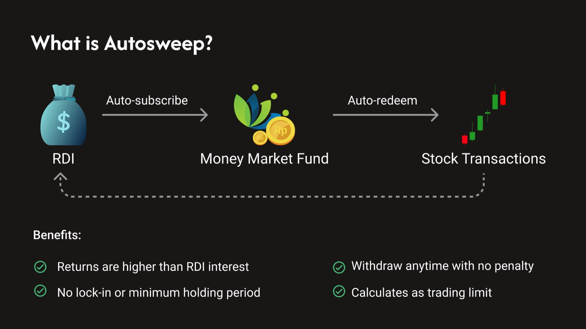
I reviewed the existing flow, from the Profund menu to the Autosweep settings page.
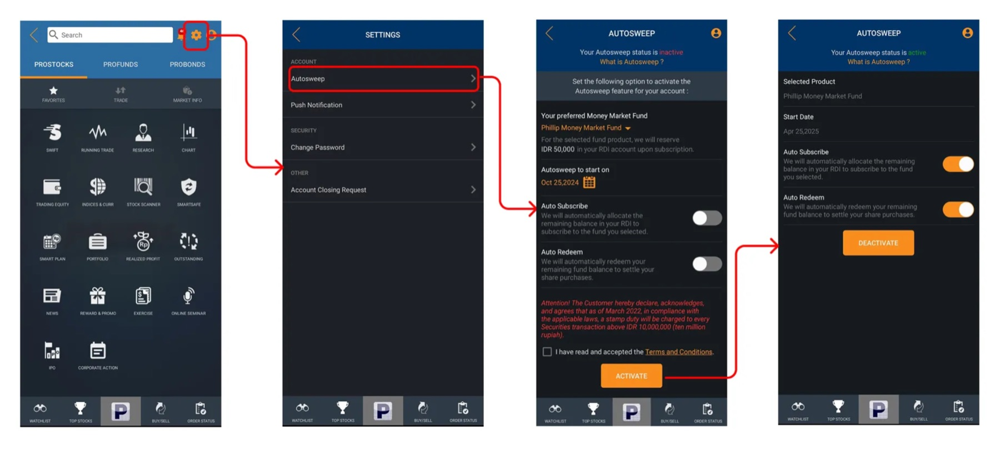
Autosweep was buried behind a small settings icon that was hard to reach. Although it's one of the key features in Profund, the entry point looked unimportant. Users might never find it, or hesitate to explore it.
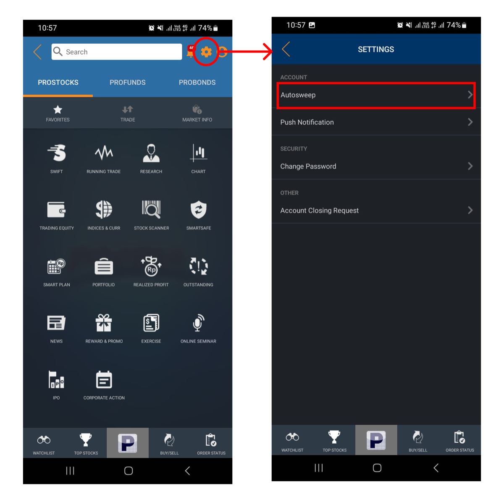
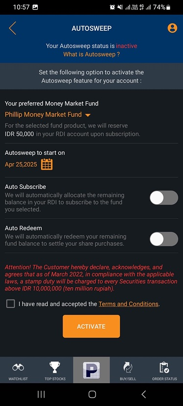

Autosweep moves out of Settings and becomes the first item in the Profund menu.
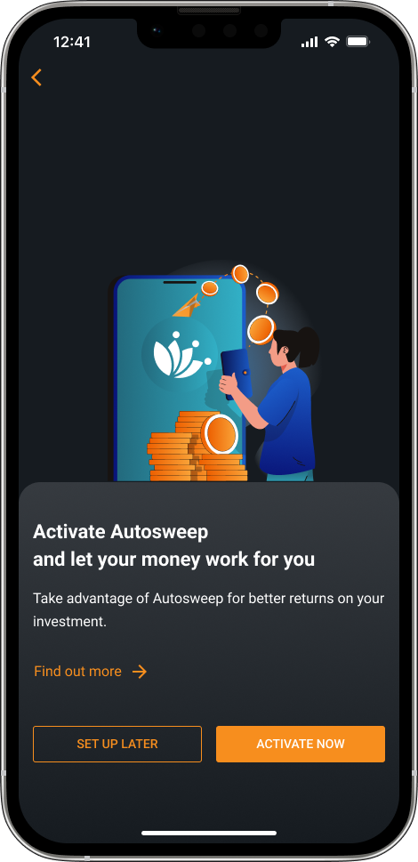
"Let your money work for you" comes first. A Find out more link helps new users who haven't heard of the feature, and Set up later gives a clear way out.
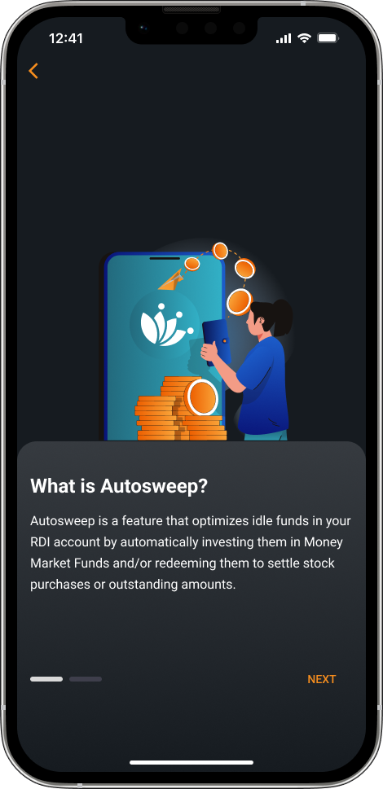
A short, plain-language explainer replaces the under-emphasized link.
Four checkmarks: higher returns than RDI interest, no lock-in, withdraw anytime, and it counts toward the trading limit.
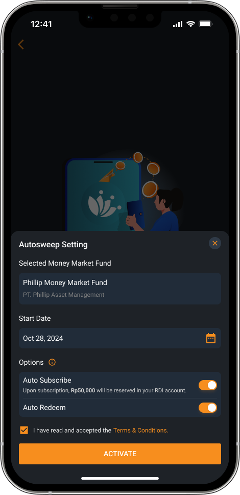
Fund, start date and the two toggles sit in one sheet with clear labels. The terms checkbox comes right before Activate.
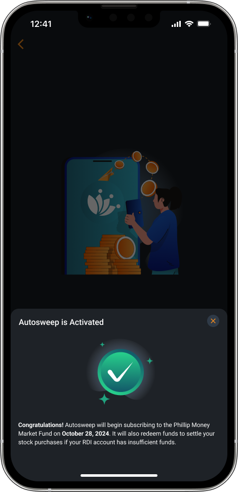
A success state confirms Autosweep is on and says when the first subscription will happen.
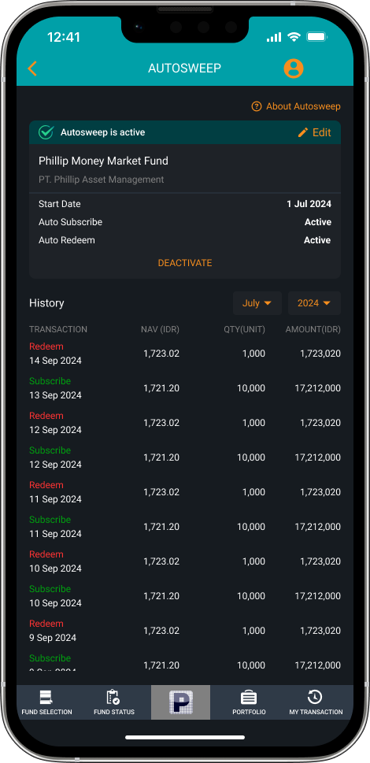
A green "Autosweep is active" card shows the fund, start date and both settings. Edit and Deactivate live in the card, and the history below lists every subscribe and redeem.
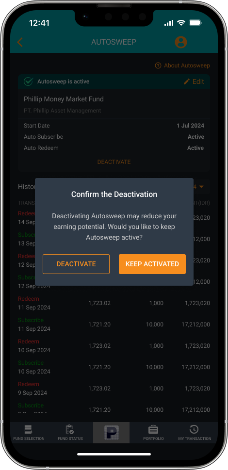
Before switching off, a dialog warns that it may reduce earning potential, with Keep activated as the primary button.
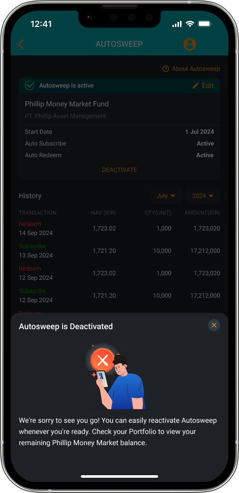
The deactivated state confirms the change, explains how to turn it back on, and points to Portfolio for the remaining fund balance.